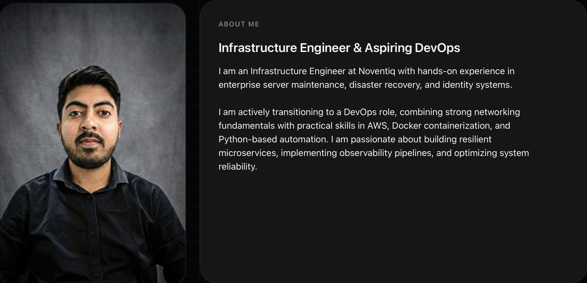
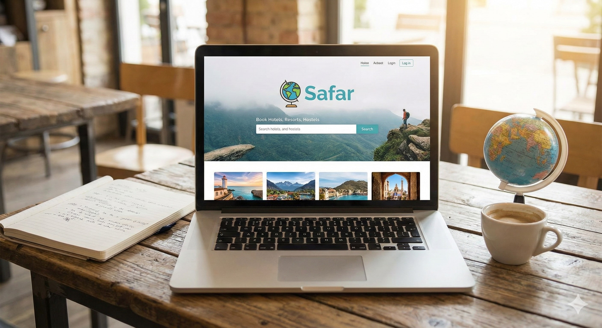
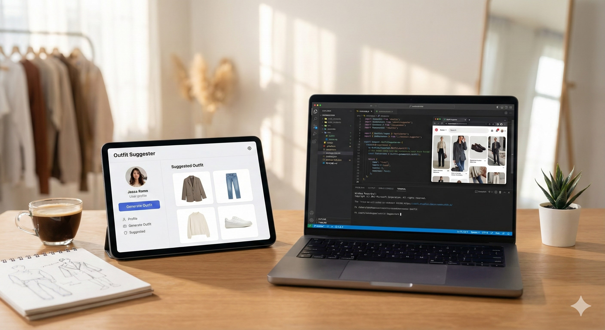

Containerized Observability Stack
DevOps & MonitoringArchitected a 3-container microservices stack orchestrating a custom Python/Flask metrics producer, Prometheus for time-series data scraping, and Grafana for real-time visualization. Engineered a multi-threaded Python agent to poll system kernel metrics and trigger REST API warnings.
Tech Stack:
View on GitHub
Cloud Portfolio & Automation
AWS InfrastructureHosted a personal portfolio on AWS S3 with Static Website Hosting enabled, configuring IAM Bucket Policies for secure, least-privilege public access. Developed a Python Infrastructure-as-Code script utilizing Boto3 to automatically upload compiled assets to S3.
Tech Stack:
View Live App
SAFAR
Full Stack Web AppA travel booking platform backend deployed dynamically on Render (PaaS). Securely managed environment variables and analyzed production build logs for continuous delivery, solving the clutter issue in modern booking apps.
Tech Stack:
View Live App
Outfit Suggester
Web ApplicationAn intelligent styling assistant where users can curate and share outfit ideas. Key challenge: Implementing the logic to suggest clothes based on weather data and user preferences.
Key Features:
- External image linking
- Weather-based logic
- Responsive Grid Layout